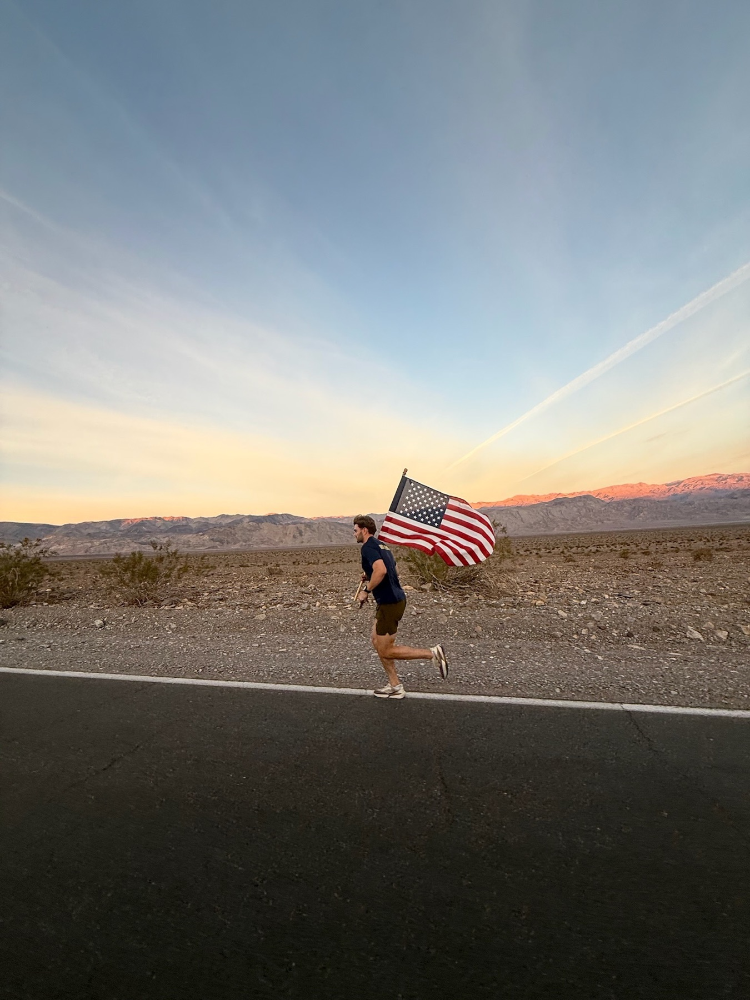
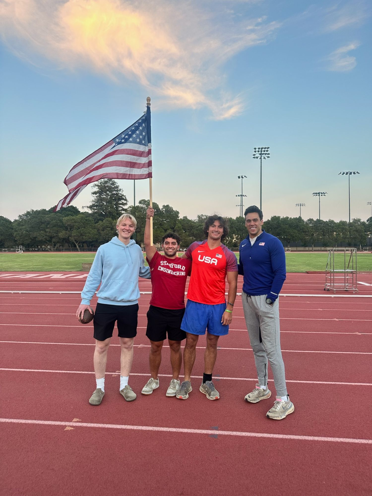
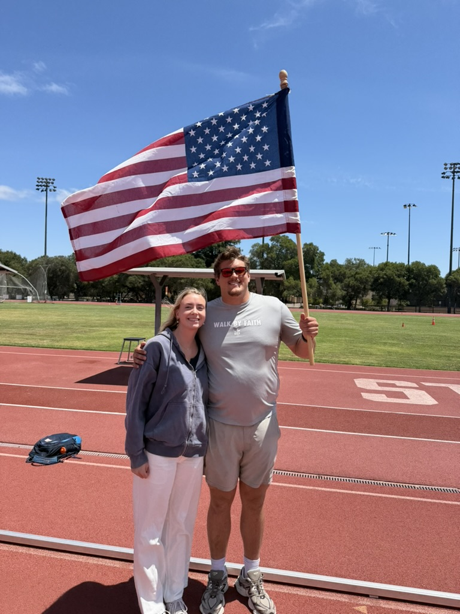
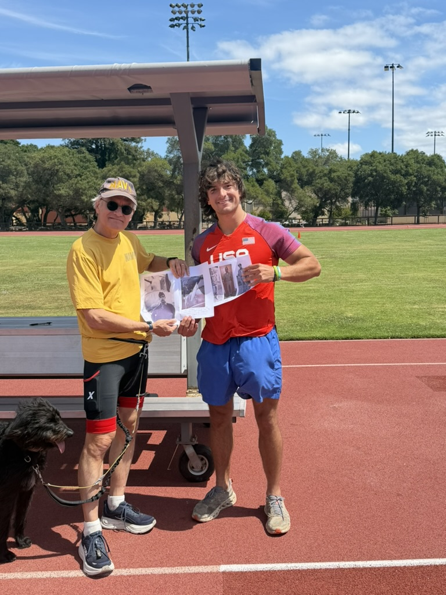
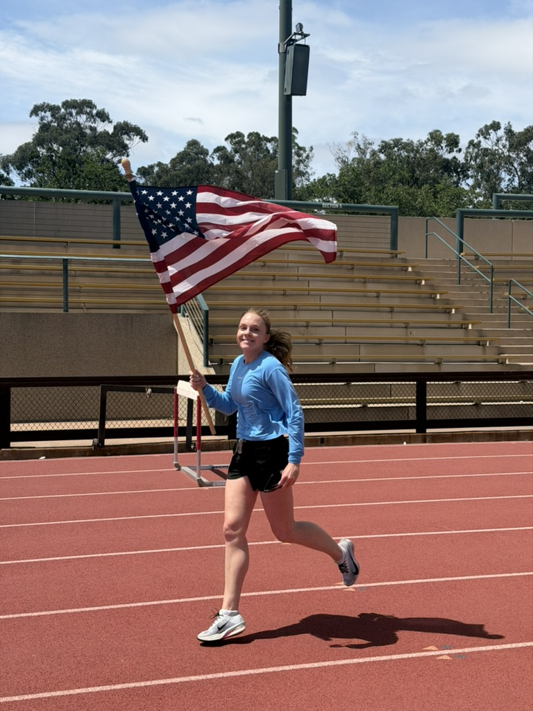

The Stanford
American Club
Faith, freedom, service — and 125 miles to prove we mean it.



I co-founded The Stanford American Club to revive patriotic spirit on campus — debates, speaker events, and challenges celebrating faith, freedom, and service.
The Veterans Day Challenge · Nov 2025
Its proof of concept was the Veterans Day Challenge: the lowest point in North America to the gateway of its highest peak. Six military-affiliated Stanford students. U.S. flags in hand, carried the whole way to honor America's veterans.
We ran for twenty-four hours, midnight to midnight on Veterans Day. Somewhere in the dark miles it struck me that everything I've built was on that road at once — the fitness the Marine Corps demands, the discipline I coach at Tough Kids Boot Camp, the engineer's habit of treating pace, fuel, and elevation as a system to be designed, and the conviction behind the book: that hard things are worth doing because of who they make you.
Relay for America — Memorial Day
The club's next tradition, organized with veterans groups on campus: a 24-hour American flag relay to honor fallen veterans for Memorial Day. Sunset to sunset — 8:15 PM Sunday to sunset Monday — with one goal: keep the flag moving for at least 100 miles.
Anyone can carry. Fifteen minutes earns a free Spartan race entry; an hour or more earns an American flag of your own. Runners log laps as they go, and the flag passes hand to hand through the night. At 8:15 PM Monday the relay ends with a closing vigil — reading the names of those from Stanford who died serving our country.




relayforamerica.org/stanford ↗